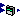
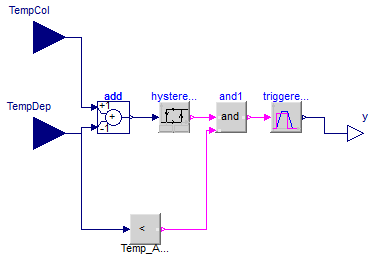

| Name | Description |
|---|---|
|  ControladorSolar | Controlador solar sencillo. Termostato diferencial |
| Ejemplos y modelos de verificacion de controladores solares |

Centralita solar. Funcionamiento de los más simples como termostato diferencial.
| Type | Name | Default | Description |
|---|---|---|---|
| TemperatureDifference | DeltaT_on | Diferencia tempertura para el arranque del circulador [K] | |
| TemperatureDifference | DeltaT_off | Diferencia de temperatura para la parada del circulador [K] | |
| CelsiusTemperature | Temp_Acum | Temperatura de consigna del acumulador [degC] |
| Type | Name | Description |
|---|---|---|
| input RealInput | TempCol | Senal de temperatura del colector |
| input RealInput | TempDep | Senal de temperatura del deposito |
| output RealOutput | y | Senal de control del circulador |
model ControladorSolar
"Controlador solar sencillo. Termostato diferencial"
Modelica.Blocks.Interfaces.RealInput TempCol
"Senal de temperatura del colector";
Modelica.Blocks.Interfaces.RealInput TempDep
"Senal de temperatura del deposito";
Modelica.Blocks.Interfaces.RealOutput y "Senal de control del circulador";
Modelica.Blocks.Logical.TriggeredTrapezoid triggeredTrapezoid(
amplitude=1,
rising=0.1,
offset=0);
Modelica.Blocks.Math.Add add(k1=+1, k2=-1);
Modelica.Blocks.Logical.Hysteresis hysteresis(
uLow=DeltaT_off,
uHigh=DeltaT_on);
Modelica.Blocks.Logical.And and1;
Modelica.Blocks.Logical.LessThreshold TempAcu(threshold=Temp_Acum);
parameter Modelica.SIunits.TemperatureDifference DeltaT_on
"Diferencia tempertura para el arranque del circulador";
parameter Modelica.SIunits.TemperatureDifference DeltaT_off
"Diferencia de temperatura para la parada del circulador";
parameter Modelica.SIunits.CelsiusTemperature Temp_Acum
"Temperatura de consigna del acumulador";
equation
connect(triggeredTrapezoid.y, y);
connect(add.u1, TempCol);
connect(add.u2, TempDep);
connect(add.y, hysteresis.u);
connect(hysteresis.y, and1.u1);
connect(and1.y, triggeredTrapezoid.u);
connect(TempAcu.y, and1.u2);
connect(TempDep, TempAcu.u);
end ControladorSolar;